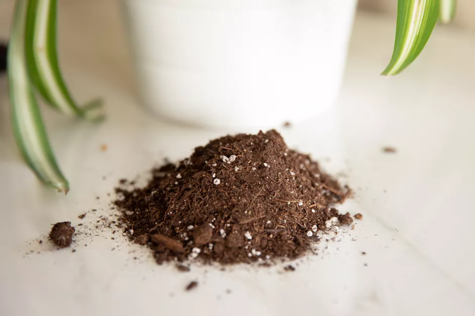
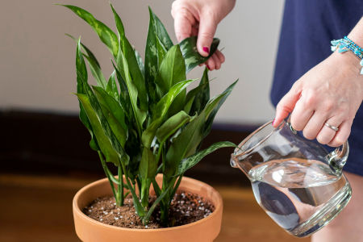
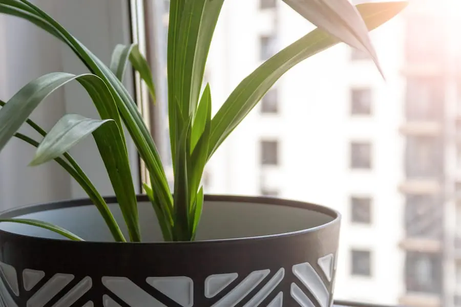
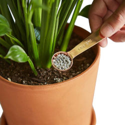

Whether you are just beginning or an expert, the biggest rule in plant care is: "Everything in moderation".
All plants require water, light, and food at different amounts, but the key to healthy plants is to practice moderation and always err on the side of caution.

“Soil” is a bit of a misnomer when it comes to the growing media used for indoor plants. The best growing media is soil-less and is a combination of equal parts peat moss, vermiculite/perlite, and compost. If a soil mix contains actual dirt from outside, there is a great chance that your indoor plant won't respond well to it. Houseplants need to have room in their soil for root growth, aeration, and proper draining (things to also note when choosing a container).
 Most often when caring for plants, people tend to worry they are not providing addequate water to them. When in fact, however, they are giving them entirely too much. Unless noted otherwise, most houseplants prefer being on the dryer side as opposed to constantly being wet. Watering schedules of once to twice weekly are often suitable for most plants. The key is to water thoroughly, not frequently. A good measure to see if your plants are wet is by weight. If the plant is small enough to do so, simply pick up it's container. When the plant is feeling feather-light, a good watering may be needed. When watering your plants, a good steady flow of water is best. When water can be seen coming from the bottom of the container through the drainage holes, the plant has sufficient water.
 Proper light for a plant is just as important as water. Be sure to read this documentation that came with your plant to know how much light it needs. Houseplants typically require high light (six or more hours a day), medium light (four to six hours a day), or low light (less than three hours a day). Plants will either require bright or direct light (sunlight from a south-facing window) or indirect or filtered light (sunlight through a curtain or light from a bulb). The idea is to replicate the plants natural habitat as much as possible. Insuffecient light will not mean the end of your plant, however, it will stop it from producing any new growth.
 Unlike when in an outdoor garden the nutrients available to a houseplant are strictly limited by the amount of soil in the pot and what you provide for supplemental feeding. This is when fertilizing comes into play when caring for plants. Fertilizer should be thought of as a completying factor in the soil that your plant lives in. When the soil is still fresh and new, the soil is full of nutrients to help the plant grow and flourish. After about two months, however, the nutrients in the soil will be consome by the plant. Therefore, fertilizer will need to be added to allow for contiuned and healty growth. Rememer moderation when it comes to fertilizing, too much can cause more harm than using none at all.